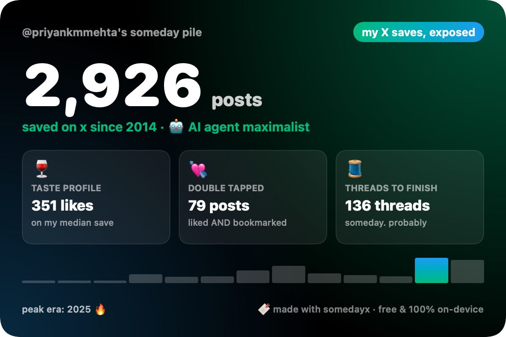
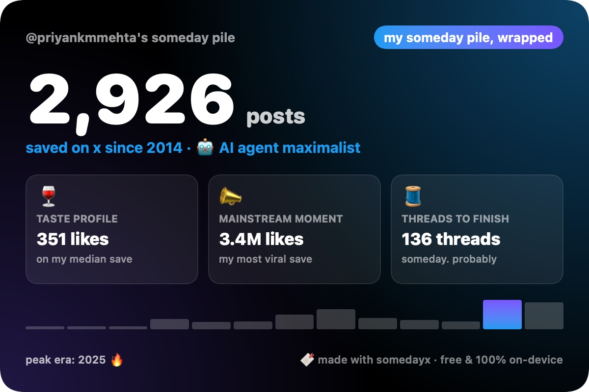
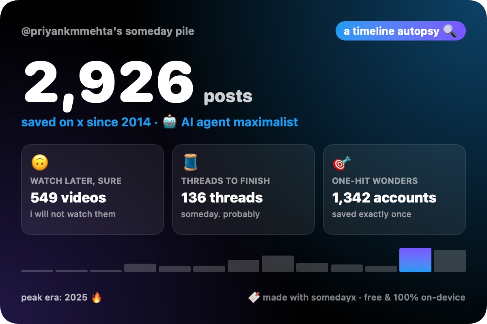
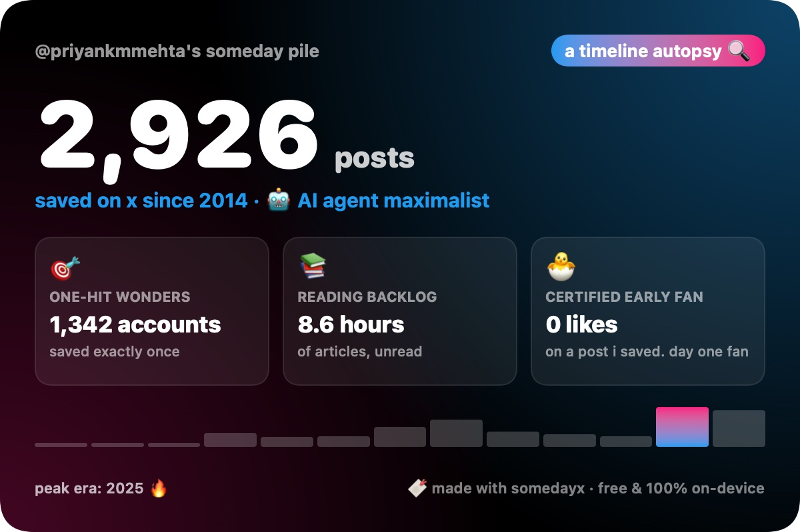

You've saved thousands of posts and never found one again. SomedayX searches every bookmark and like by meaning, even what's inside the images, from your Mac's menu bar.
Free & open source · 100% on your Mac · no account, no cloud, no tracking
A Spotlight-style panel opens over any app. Type "that thread about pricing" and it's there, even if the post never used those words.
"screenshot of a dashboard", "meme about startups". It finds posts by what's in the picture and reads the text in screenshots.
Long-form X Articles are searchable word for word, not just their titles. Filter with has:article, from:, year: and more.
Every card is random: a new headline, colours and stats each time. Shuffle until it hurts, then share it on X in one click. The image is already attached.




Opens to everyone on Tuesday, Oct 27. Follow @priyankmmehta to get it first.
# builds and opens SomedayX; the app walks you through the rest
git clone https://github.com/priyank-saarthios-ai/somedayx.git
cd somedayx && macapp/install.sh
macOS 14+ · Apple silicon recommended · 8 GB RAM · ~1.5 GB disk · Homebrew
X's own bookmarks page only offers basic keyword search. SomedayX copies your bookmarks and likes to your Mac and lets you search them by meaning: double-tap Option anywhere and type what you remember, like "that thread about pricing", even if the post used different words. Filters like from:handle, has:video and year:2024 work too.
Yes. It indexes both your bookmarks and your likes, reads the text inside screenshots and memes, understands what's in the images, and reads saved X Articles in full.
It's free and open source (MIT). Search runs on your Mac with Google's EmbeddingGemma model; there's no account, no server and no tracking. It only goes online to read your saves from X, fetch the titles of links you saved, and download the model once. AI apps can read your saves only if you turn on MCP and connect one; it's off by default. This website counts visits with cookieless, anonymous analytics (Umami); the app itself has none.
A Mac with macOS 14 or newer (Apple silicon recommended), 8 GB of RAM, about 1.5 GB of disk space, and Homebrew. Install with one command from the GitHub repo; the app walks you through the rest.
It opens its own Chrome window where you log in to X once. After that it reads your Bookmarks and Likes the same way the X website loads them for you, at a human pace, read-only.
SomedayX is unofficial and not affiliated with X Corp. It only reads your own saves with your own session. Automated access may still conflict with X's terms; you decide whether to use it.
It charges per post read, and the bookmarks endpoint has historically returned only your latest ~800 bookmarks. SomedayX gets your whole history, for free.
Indexing a few thousand saves takes about half an hour once, in the background. After that the search model sleeps when idle and wakes in a second when you search.
Yes. SomedayX includes a read-only MCP server. Turn it on in the menu bar under AI Apps (MCP), then connect Claude Desktop, Claude Code, the ChatGPT desktop app, Codex or Cursor in one click. ChatGPT works in the desktop app for Mac and Codex, not in chatgpt.com in a browser or the phone apps. It's off by default, and cloud AI apps send what they read to their servers. How to set it up.
Mac only for now. If you'd use it elsewhere, say so in a GitHub discussion.